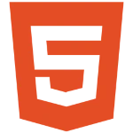
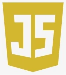
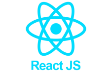

I hold a Bachelor’s Degree in Philosophy and have pursued specialized training in IT support and computer maintenance, with a focus on networking, at Melton Communications in Yaoundé, Cameroon. I further advanced my technical expertise by becoming a certified VSAT Installer for GT&T, Signis, and AFSAT systems in Africa, and by completing coursework in Emergency Telecommunications. I have worked as an IT Support Technician and Network Technician for organizations such as Melton Communications, CNET-SIRD Cameroon, and Bambuiy Engineering Services and Techniques. Within the Swedish Civil Contingencies Agency (MSB), I have served as an ICT Specialist for the United Nations Office for the Coordination of Humanitarian Affairs (OCHA) in Mali, and as an IT Officer for the European Union Civil Protection Mechanism mission in Madagascar, supporting the Technical Assistance and Support Team (TAST). In recent years, I have focused on web design, particularly using the WordPress CMS, and have expanded my expertise to full-stack web development, cybersecurity, and Python programming. I possess strong skills in HTML & CSS, JavaScript, React, Node.js, and Python. I am actively enhancing my knowledge in cybersecurity and cloud computing, specifically with Microsoft Azure. For a comprehensive overview of my work and technical skills, please refer to my GitHub and LinkedIn profiles.
Extensive Experience in IT Consultancy and Technical Support: Proven expertise in diagnosing and systematically troubleshooting a wide range of IT issues, including operating systems, computer hardware, networks, telephony, and other office electronics. Proficiency in Office Technology and Applications: Strong skills in utilizing various office equipment and software, including Microsoft Office Suite, Linux, and macOS, as well as operating and maintaining devices such as photocopiers, scanners, and telecommunication equipment. Sales, Customer Service, and After-Sales Support: Demonstrated experience in direct sales, customer service, and after-sales maintenance, with a focus on IT, networking, communication equipment, and office electronics. Effective Communication and Leadership Abilities: Strong communication skills with experience in customer engagement, team collaboration, and staff management. Advanced Technical Skills in IT and Telecommunications: In-depth knowledge of IT support, telecommunications, network configuration, and computer assembly.
 HTML
CSS
 Javascript
Node.Js
 React
Python
Testimony
Mbiydzenyuy Courtney-Pearl
Information Technology Expert
"Working with Dave WANTANGWA was an exceptional experience. His deep expertise in IT consultancy, technical support, and networking was evident from day one. He consistently demonstrated a methodical approach to troubleshooting complex IT issues, whether it was resolving network outages, maintaining communication systems, or providing end-user support. His proficiency with various operating systems and office equipment, combined with his ability to communicate effectively with both technical and non-technical staff, made him an invaluable asset to our team. Beyond his technical skills, Dave showed remarkable leadership in managing projects and guiding team members, always maintaining a high level of professionalism and dedication to customer satisfaction. His passion for continuous learning in areas like cybersecurity and web development further underscores his commitment to excellence."
Contact
If your company or enterprise is seeking a skilled professional for web development projects, Python programming, or cybersecurity roles, I am available and eager to collaborate with you. With a strong foundation in full-stack web development, including proficiency in HTML, CSS, JavaScript, React, and Node.js, and extensive experience in Python, I am well-equipped to handle diverse development needs. Additionally, my advanced knowledge in cybersecurity and commitment to ongoing learning make me a valuable asset for organizations looking to enhance their security posture. I am open to both freelance project-based engagements and full-time employment opportunities and look forward to the possibility of contributing my skills and expertise to your team. Please feel free to reach out to discuss how I can support your goals and drive value for your business.